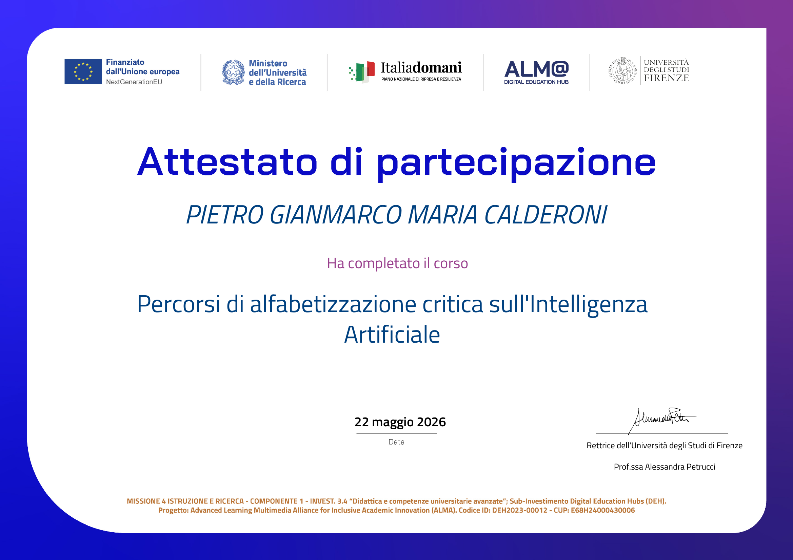

Development & innovation
Interactive design and development of this website using a Human-in-the-Loop approach, where engineering intuition and editorial design actively guided code generation through Artificial Intelligence models.
- Architecture: Rigorous definition of the information architecture, user experience, and visual style, starting from scratch without pre-made templates.
- Prompting: Use of conversational AI to iteratively write HTML, CSS, and pure JavaScript, refining prompts to obtain semantic, lightweight, and responsive code.
- Outcome: Development of an interactive interface with scroll-based animations and optimized vector graphics, combining strategic vision with the efficiency of advanced AI tools.
1. DESIGN SYSTEM AND TYPOGRAPHY
Create a :root with the following CSS Custom Properties to maintain an elegant color palette, inspired by nature and ink:
- Base Colors: Ivory (`#F8F1E4`, `#EDE5D5`) for warm backgrounds.
- Text/Dark Colors: Deep Ink/Forest (`#2A4B3C`, `#345948`) for contrast, dark backgrounds, and primary text.
- Accent Colors: Earth/Golden Amber (`#D49A47`) for call-to-actions, hovers, graphic details, and icons.
- Borders and Stone: Desaturated tones (`#738574`, `#E4DACD`) for light borders and secondary texts.
Import two Google Fonts:
- "Cormorant Garamond" (serif) for main titles and italic details (elegant emphasis).
- "DM Sans" (sans-serif) for paragraph texts, buttons, and data, ensuring maximum technical readability.
2. GLOBAL COMPONENTS AND LAYOUT
- Use an asymmetrical layout: play with grids (CSS Grid) often dividing sections into proportions like 5fr / 4fr.
- Implement a custom cursor (an amber dot) that follows the mouse via JS.
- Navigation must be "sticky" at the top, with a glassmorphism effect (backdrop-filter: blur), textual logo on the left, links in the center, and a CTA button on the right. Include a hamburger menu for mobile with a full-screen pop-up animation.
3. SITE SECTIONS AND CONTENT (Architecture)
Build the following sections, each with a unique identifier (e.g., `id="hero"`):
1. **Hero Section:** Dark background (Ink). Layout divided in half. On the left an "eyebrow text" in small caps, a giant title ("I optimize processes. I lead teams." with some words in italics), a brief description, and buttons for CV and Contacts. On the right, a profile photo with a sepia/grayscale filter that returns to color on hover.
2. **About:** Asymmetrical layout. On the left the introductory text. On the right, implement a grid of circular statistics made with native SVG (`<circle>`). The circular bars must fill up animating via JS (Intersection Observer) and the numbers inside must count from 0 to the final value (e.g., +20 people, -60% times).
3. **Experience:** Dark background. A vertical "timeline" layout. Each experience (e.g., FacolCup, Museo Stibbert) must have the date on the left and the content on the right. Separate the highlights of the experience with a structured list (Team, Documents, Relations, Processes). Add an image gallery and an "Achievement" box at the bottom.
4. **Skills:** Light background. On the left the Hard Skills with horizontal progress bars that extend via JS on scroll. On the right the Soft Skills, represented by a grid of cards containing minimal SVG icons and text.
5. **Projects & Tech:** Timeline structure similar to Experience.
- For the "AI Portfolio" project: Insert a dark box that visually shows a simulated "System Prompt".
- For the "Software/Java" project: Implement a horizontal image slider perfectly functioning in pure JS (with prev/next navigation arrows).
- For the "Business Case (Chinéo)" project: Create native UI components in CSS Grid to show a SWOT Analysis (4 quadrants) and a Lean Canvas (grid with 5 columns and 2 rows). They must look like management reports integrated into the site.
6. **Education:** Interactive cards for universities. The card for the current degree must be expandable (accordion click via JS) to show the list of exams divided by academic years.
7. **Travel:** A grid divided into "Visited" and "Wishlist" with the relative emoji flags. Add a complex animation: a huge SVG airplane that, on scroll, slides from left to right revealing the content hidden under a "curtain" (curtain effect).
8. **Contacts & Footer:** Very clean final section, dark backgrounds, large impactful text "Let's talk.", and shaped buttons for Email and LinkedIn.
4. ANIMATIONS AND JAVASCRIPT LOGIC
- **Scroll Reveals:** Use the `IntersectionObserver` APIs to make sections appear fading from bottom to top (`fadeUp`) in a staggered way (`delay`).
- **Counters and Charts:** Write custom JS logic to animate the `stroke-dashoffset` attribute in circular SVGs and a `setInterval` for the incremental animation of numbers.
- **Slider:** Logic to scroll the horizontal overflow-x on arrow click.
- **Navigation:** Update the active link in the nav bar based on scroll position.
5. FINAL TECHNICAL CONSTRAINTS
- CSS strictly in the `<style>` tag, JS in the `<script>` tag at the bottom of the file.
- The design must be perfectly "Mobile First" / Responsive via Media Queries, collapsing the grids into a single column and activating the hamburger menu on screens under 900px.
- Write clean, highly commented, and production-ready code. Maximum attention to micro-interactive details (hover states on buttons, smooth transitions)."
Process Note: After this initial prompt, itself optimized through AI, I adopted a human-guided iterative approach. I refined the architecture, integrated the final copy, and curated every detail, continuously testing color palettes and typographic styles until reaching the right visual balance.
Participation in the hackathon "StudIAre con l'IA. Dalle scorciatoie all'uso critico" at Palazzo degli Affari in Florence and completion of a certified training path on Artificial Intelligence.
- Hackathon & Concept: Team ideation and design of two digital artifacts for integration into the University’s official awareness campaign on the ethical and critical use of AI in academic, professional, and personal contexts.
-
ALMA Certification:

Group project developed within the Software Engineering course, focused on designing a software system for managing museum guided tours. The system enables the management of tours, rooms, tour guides, bookings, and online payments, with differentiated access for visitors, guides, and museum operators, ensuring security, scalability, and reliability requirements.
- Modeling: The work included defining the domain conceptual model, collecting and formalizing functional and non-functional requirements, modeling use cases, and designing the class diagram.
- Development: Java coding applying Object-Oriented Programming (OOP) principles, UML (use case diagram, class diagram), and requirements analysis.


Development of a fire detection system based on an ESP32 WROOM-32 microcontroller, integrating electronic circuit design with firmware development for sensor data acquisition, real-time processing, and alarm response management.
- Hardware: Electrical schematic design and physical circuit assembly, including: a KY-026 IR 760–1100 nm flame sensor for optical flame detection, a red LED for visual alarm, and a passive piezoelectric buzzer as an acoustic alarm actuator. The central control unit is an ESP32 WROOM-32 board with integrated Wi-Fi connectivity.
- Software: Programming of the ESP32 microcontroller in C++ through Arduino IDE to read digital and analog sensor inputs, implement threshold logic for event detection, control the alarm buzzer through PWM, and transmit data via Wi-Fi to Firebase Realtime Database, with real-time alarm notifications displayed on an HTML web page connected to the database.

Business plan for a simulated startup in Smart Mobility and IoT.
In short: a predictive algorithm integrated with urban traffic light systems and emergency dispatch centers to clear traffic in front of emergency vehicles, reducing response times.
- Suggesting ideas and ways to explore topics further, providing specific or general examples;
- Facilitating research and identification of analytical material;
- Identifying grammar and spelling errors and opportunities for semantic and lexical improvement.